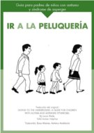
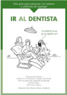
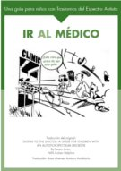
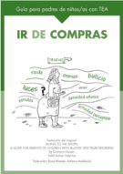
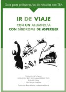
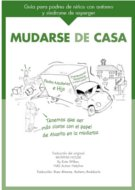
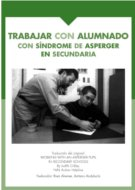
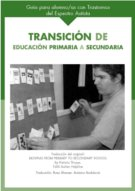

Guias de “The National Autistic Society”
Por iniciativa de la Federación Autismo Andalucía (http://www.autismoandalucia.org/) se han traducido a lengua castellana varias interesantes guias creadas por The National Autism Society (http://www.nas.org.uk/). Por formar un conjunto homogéneo, en su estilo y presentación, las mostramos unidas en esta página.
- Ir a la peluquería: guía para padres de niños con autismo y síndrome de Asperger
-

…Muchos padres consideran que llevar a sus hijos/as a la peluquería puede ser una experiencia difícil para todos los implicados. Para cualquier niño/a puede ser una situación estresante cortarse el pelo, pero para un niño/a con trastorno del espectro autista (TEA) el hecho de ir a la peluquería puede ser particularmente perturbador. Este folleto explica brevemente porqué un niño/a puede angustiarse cuando le cortan el pelo y sugiere algunas estrategias de ayuda…
- Ir al dentista: una guía para personas con autismo y síndrome de Asperger
-

…Para los niños, e incluso para algunos adultos, ir al dentista es una experiencia bastante estresante. Para aquellas personas al cuidado de un niño con trastorno del espectro autista (TEA) este tipo de situaciones son aun más traumáticas. Este folleto tiene el objeto de ofrecerle breves estrategias que ayudarán a mejorar la experiencia a todos los implicados…
- Ir al médico: una guía para niños con trastornos del espectro autista
-

…Ir al médico puede ser una experiencia muy estresante para las personas con trastorno del espectro autista (TEA) y sus familias. En este folleto se citan algunos de los motivos por los que esta experiencia resulta difícil para una persona con TEA y ofrece algunas estrategias que se pueden utilizar para ayudarles a mejorar esta situación…
- Ir de compras: guía para padres de niños con trastornos del espectro autista
-

…A menudo los padres de niños/as con trastornos de espectro autista llaman a las entidades que ofrecen servicios a personas con TEA preguntando sobre el comportamiento de sus hijos en distintos entornos. Una salida, como por ejemplo ir de compras, puede resultar una experiencia muy estresante tanto para el niño como para el resto de su familia. Este folleto pretende proporcionar algunas estrategias que ayudarán a reducir algunas de las dificultades que puede tener un joven con TEA…
- Ir de viaje con un alumno con síndrome de Asperger: guía para profesores de niños con trastornos del espectro autista
-

…Sin duda alguna, viajar es una experiencia maravillosa, pero para un niño con síndrome de Asperger puede resultar muy complicada, ya que le priva de su estructura y sus redes de seguridad. Después de viajes de varios días o viajes largos en este país y en el extranjero, he recopilado los siguientes consejos que han ayudado a los profesionales a trabajar con niños a los que les resulta difícil viajar…
- Mudarse de casa: guía para padres de niños con autismo y síndrome de Asperger
-

…Mudarse de casa puede ser una experiencia estresante para todo el mundo. Para las personas con Trastorno del espectro autista (TEA), a quienes les gustan las rutinas y encuentran difíciles los cambios, pueden generarles mucho estrés y ansiedad. Este folleto pretende proporcionar algunas sugerencias básicas sobre cómo hacer la experiencia menos estresante a las personas con TEA…
- Trabajar con alumnado con síndrome de Asperger en secundaria
-

… Este folleto está dirigido a cualquier persona que trabaje con alumnos con síndrome de Asperger en escuelas de Educación Secundaria: profesores, orientadores y en especial los educadores/as. Este cuadernillo es una breve introducción y sólo proporciona pequeños consejos. Es importante recordar que todos los alumnos con síndrome de Asperger son diferentes y que aquello que funciona con uno, puede que no sirva para otro. Es importante ser lo más flexible posible…
- Transición de educación primaria a secundaria: guía para alumnos con trastornos del espectro autista
-

…Este folleto está dirigido a profesores/as y educadores/as para ayudar a niños/as con trastornos del espectro autista (TEA) en la transición entre las Etapas de Primaria a Secundaria. Este cuadernillo también puede ser útil para los padres de jóvenes con autismo o con síndrome de Asperger…
Publicaciones presentadas en esta página
- Ir a la peluquería: guía para padres de niños con autismo y síndrome de Asperger
- Ir al dentista: una guía para personas con autismo y síndrome de Asperger
- Ir al médico: una guía para niños con trastornos del espectro autista
- Ir de compras: guía para padres de niños con trastornos del espectro autista
- Ir de viaje con un alumno con síndrome de Asperger: guía para profesores de niños con trastornos del espectro autista
- Mudarse de casa: guía para padres de niños con autismo y síndrome de Asperger
- Trabajar con alumnado con síndrome de Asperger en secundaria
- Transición de educación primaria a secundaria: guía para alumnos con trastornos del espectro autista
La edición y mantenimiento de EspectroAutista.Info se ha descontinuado. Para conocer todos los detalles lea la última noticia.